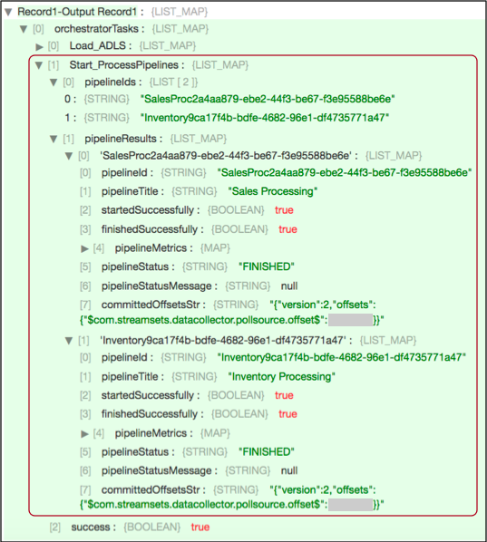

Start Pipelines
Supported pipeline types:
|
The Start Pipelines processor is an orchestration stage that you use in orchestration pipelines. Orchestration stages perform tasks, such as schedule and start pipelines and Control Hub jobs, that you can use to create an orchestrated workflow across the StreamSets platform. For example, an orchestration pipeline can use the Cron Scheduler origin to generate a record every Monday at 6 AM to trigger the Start Pipelines processor, which starts a pipeline that loads data from the previous week and generates a report.
The Start Pipelines processor can start pipelines that run on any StreamSets execution engine, such as Data Collector, Data Collector Edge, or Transformer. However, the processor can only start pipelines that run on the specific execution engine configured in stage properties. You can use additional Start Pipelines processors to start pipelines on different execution engines.
After performing its task, the Start Pipelines processor updates the orchestration record, adding details about the pipelines that it started. Then, it passes the record downstream. You can pass the record to an orchestration stage to trigger another task. Or, you can pass it to a non-orchestration stage to perform other processing. For example, you might use a Stream Selector processor to pass the record to different stages based on a pipeline completion status.
When you configure the Start Pipelines processor, you define the URL of the execution engine that runs the pipelines. You specify the names or IDs of the pipelines to start along with any runtime parameters to use. For an execution engine registered with Control Hub, you specify the Control Hub URL, so the processor starts the pipelines through Control Hub.
You can configure the processor to reset the origins in the pipelines when possible, and to run the pipelines in the background. When running pipelines in the background, the processor immediately updates and passes the input record downstream instead of waiting for the pipelines to finish.
You also configure the user name and password to run the pipeline and can optionally configure SSL/TLS properties.
Pipeline Execution and Data Flow
The Start Pipelines processor starts the specified pipelines upon receiving a record. The processor adds task details to the record and passes it downstream based on how the pipelines run:
- Run pipelines in the foreground
- By default, the processor starts pipelines that run in the foreground. When the pipelines run in the foreground, the processor updates and passes the orchestration record downstream after all the started pipelines complete.
- Run pipelines in the background
- You can configure the processor to start pipelines that run in the background. When pipelines run in the background, the processor updates and passes the orchestration record downstream immediately after starting the pipelines.
Generated Record
The Start Pipelines processor updates the orchestration record that it receives with information about the pipelines that it starts.
The processor adds the following fields:
| Field Name | Description |
|---|---|
| <unique task name> | List Map field within the orchestratorTasks
field of the record. Contains the following fields:
|
| <pipeline ID> | List Map field within the pipelineResults field that provides
details about each pipeline. Contains the following fields:
|
For example, the following preview shows information provided by a Start Pipelines
processor with the Start_ProcessPipelines task name:

The processor starts two pipelines that run in the foreground: Sales
Processing and Inventory Processing. As you can tell from
the finishedSuccessfully fields, both pipelines completed successfully.
For an example of a full orchestration record, see Example.
Configuring a Start Pipelines Processor
Configure a Start Pipelines processor to start a Data Collector, Data Collector Edge, or Transformer pipeline. The Start Pipelines processor is an orchestration stage that you use in orchestration pipelines.